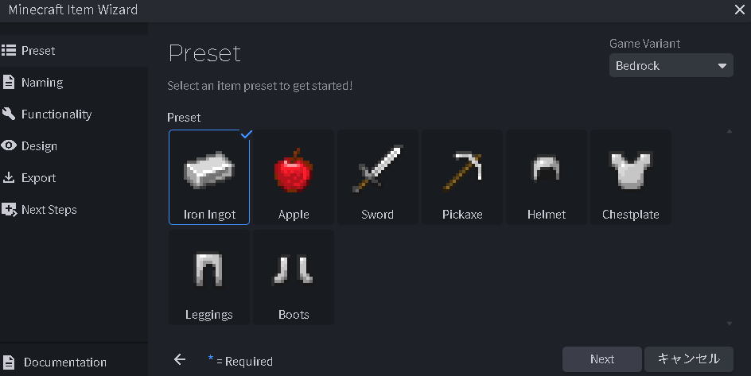
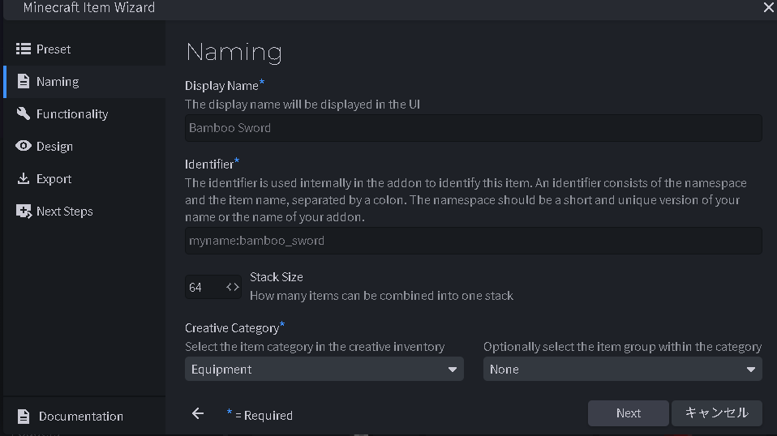
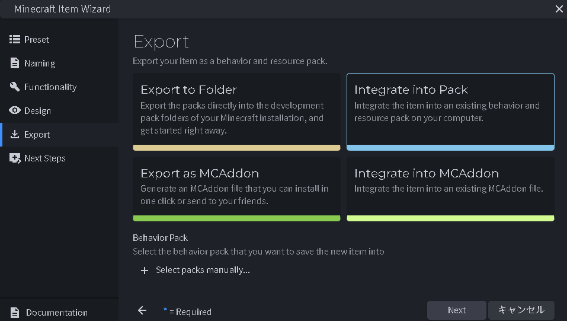
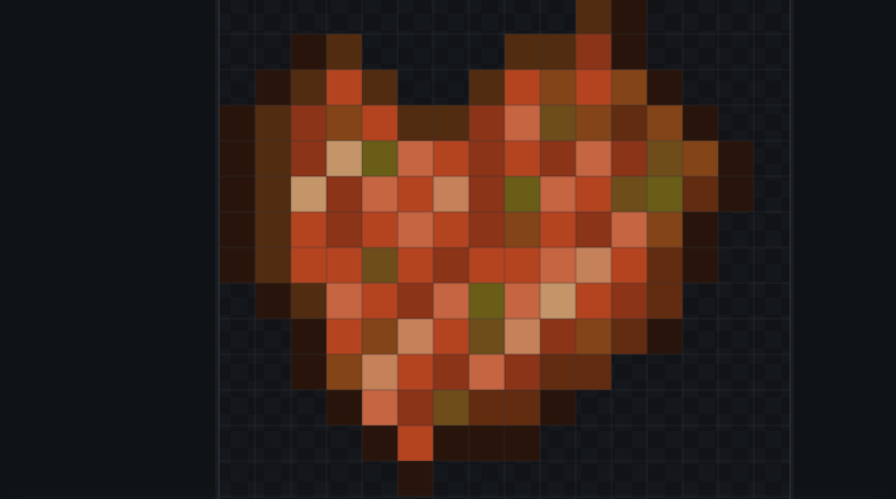

はじめに：アドオン開発の魅力
マインクラフトにおけるアドオン開発は、単なるゲームの改造を超えた「デジタルなものづくり」の究極の形です。自分だけの武器や魔法のアイテムを世界に誕生させる瞬間は、代えがたい達成感があります。本記事では、マインクラフト開発歴6年の経験を活かし、中学一年生ならではの視点で「最も効率的でエラーの少ないカスタムアイテムの作り方」を徹底的に解説していきます。
「プログラミングもモデリングも未経験だから難しそう…」と感じる方も多いと思いますが、心配はいりません。僕自身、最初はテクスチャの1ピクセルすらまともに塗れず、JSONファイルのカンマひとつでエラーを量産していました。それでも試行錯誤を繰り返すうちに、Blockbenchというツールを軸にすれば、誰でも「動くアイテム」を実際にワールドへ持ち込めるようになることがわかりました。この記事はその過程で得た知識を、当時の自分に向けて説明するつもりで、できるだけ噛み砕いてまとめています。
この記事で扱う範囲は、①開発環境の準備、②Blockbenchの日本語化と初期設定、③Item Wizardを使ったアイテムの雛形作成、④JSON構造の理解とエラー対処、⑤テクスチャデザインのコツ、⑥Script APIへのステップアップ、の6段階です。上から順に読み進めるだけで、「アイデアを思いつく→形にする→ゲーム内で確認する」という一連の開発フローを体験できるように構成しています。途中でつまずいた場合は、目次から該当セクションに戻って読み返してみてください。
1. 開発環境を整える
アドオン制作をスムーズに進めるためには、適切なツール選びが不可欠です。中学生でもプロと同じ土俵で戦うための「三種の神器」を準備しましょう。どれも無料で入手できるツールなので、初期投資はゼロ円から始められるのもこの趣味の良いところです。
- Blockbench: マイクラ公式も推奨する、最強のモデリング・テクスチャ作成ソフトです。直感的な操作で3Dモデルを作れるだけでなく、アドオンの雛形を自動生成する機能も備えています。Windows・Mac・Linuxに加えてブラウザ版も用意されているため、学校の共用パソコンでも試すことができます。
- Visual Studio Code (VSCode): テキストエディタの決定版。マインクラフト専用の拡張機能を導入することで、JSONの入力補完やエラーチェックが自動で行われるようになり、ミスを大幅に減らせます。特に「かっこの閉じ忘れ」や「カンマの過不足」は赤い波線ですぐに見つけられるようになるため、初心者ほど導入する価値があります。
- マインクラフト本体: 常に最新版にアップデートしておきましょう。また、開発中のアドオンをテストするために「試験的機能」をオンにした検証用ワールドを用意しておくと便利です。本番のワールドとは別に検証専用ワールドを分けておくことで、万が一アドオンが原因でワールドが不安定になっても、大切なセーブデータを守ることができます。
これら3つの準備が整ったら、次はいよいよ実際の制作作業に入っていきます。ここから先は、実際に手を動かしながら読み進めることをおすすめします。文章を読むだけでなく、自分のパソコンでも同じ手順をなぞることで、理解の定着度が大きく変わってきます。
2. Blockbenchの初期設定と日本語化
Blockbenchをインストールしたら、まずは自分が使いやすいようにカスタマイズしましょう。特に英語のままだと機能の理解に時間がかかってしまいますが、日本語化することで「どのボタンが何をするか」が一目でわかるようになります。
設定メニューの「Language」から「Japanese」を選択するだけで完了です。これで、複雑なボーンの設定やテクスチャのUV展開も、迷うことなく操作できるようになります。
日本語化と合わせて確認しておきたいのが「Format」の設定です。Blockbenchでは作りたいものに応じて、汎用モデル用の「Generic Model」やエンティティ用の「Bedrock Entity」など、複数のフォーマットが用意されています。今回のようにアイテムを作る場合は、後述するItem Wizardを使えばフォーマットの選択も自動化されるため、最初のうちは細かく意識しなくても問題ありません。まずは画面のレイアウトに慣れ、視点操作（マウス右ドラッグで回転、ホイールで拡大縮小）に慣れることを優先しましょう。
また、環境設定の「Interface」タブでは、テーマカラーやグリッド線の表示・非表示も変更できます。長時間作業していると目が疲れやすいので、好みに応じてダークテーマなどに切り替えておくと、制作作業がより快適になります。

言語設定を日本語に変更するだけで、作業効率は劇的に向上します。
3. Item Wizardで基礎を作る
Blockbenchには「Minecraft Item Wizard」という非常に強力なプラグインがあります。これを使うと、アイテムの基本設定（名前、識別子、レア度、食べられるかどうか等）を対話形式で入力するだけで、必要なファイル構成（JSON）を自動で作成してくれます。
既存の「ダイヤモンドの剣」や「リンゴ」をベースに選ぶことで、そのアイテムが持つアニメーションや持ち方をそのまま引き継ぐことができるため、初心者の方はまずこのウィザードから始めるのが正解です。

まずは「Preset」画面で、作成したいアイテムのベースを選びます。剣や防具、食べ物など、目的に近いものを選ぶのがコツです。
次に、アイテムの「名前」と「識別子（ID）」を設定します。識別子は他のアドオンと重複しないように、自分の名前やプロジェクト名を含めたユニークなものにしましょう。

「Naming」画面では、ゲーム内での表示名（Display Name）と、システム上の名前（Identifier）を決めます。スタック数などもここで調整可能です。
最後に、作成したファイルをどこに保存するかを決定します。開発中のパックに直接統合したり、配布用の「.mcaddon」形式で書き出したりすることが可能です。

「Export」画面では、作成したアイテムをフォルダーへ保存するか、パックに統合するかを選びます。これだけで面倒なJSONの雛形が完成します。
ウィザードが終われば、あとはBlockbenchの描画機能を使ってテクスチャを描き込むだけです。自分の思い描く「理想のアイテム」をドット絵で表現してみましょう。

ウィザードで生成された枠組みに、オリジナルのテクスチャを上書きしていきます。このように色の濃淡をつけると、マイクラの世界観にマッチします。
ここで、Item Wizardが実際にどのようなファイルを生成しているのかを見てみましょう。中身を理解しておくと、あとで自分の手でカスタマイズしたくなったときに迷わなくなります。生成されるアイテムの定義ファイル（例：diamond_sword.json）は、おおよそ次のような構造になっています。
{
"format_version": "1.20.80",
"minecraft:item": {
"description": {
"identifier": "sorann:mysterious_sword",
"menu_category": {
"category": "equipment"
}
},
"components": {
"minecraft:max_stack_size": 1,
"minecraft:icon": {
"texture": "mysterious_sword"
},
"minecraft:display_name": {
"value": "謎の剣"
},
"minecraft:hand_equipped": true,
"minecraft:durability": {
"max_durability": 250
}
}
}
}ポイントは、アイテムの機能ひとつひとつが minecraft:durability や minecraft:hand_equipped のような「コンポーネント」という単位に分かれていることです。この仕組みのおかげで、必要な機能だけを部品のように組み合わせるだけで、剣・防具・食べ物など様々なアイテムを表現できます。identifier（識別子）は他のアドオンと絶対に被らないよう、自分の名前や自作の「名前空間（namespace）」――上記の例ではsorann――をつけておくのが業界の慣例です。
【独自解説】JSON構造とエラー対策
アドオン開発で最も多くの人が挫折するのが、JSONファイルのエラーです。たった一つの「,（カンマ）」が足りないだけで、マイクラはアイテムを読み込んでくれません。ここでは、Item Wizardが生成してくれるmanifest.jsonの役割と、実際に僕がつまずいてきたエラーパターンを、原因と対処法のセットで紹介します。
すべてのビヘイビアパック・リソースパックには、パックの「身分証明書」にあたるmanifest.jsonが必ず必要です。この中で特に重要なのがdependencies（依存関係）の項目で、ビヘイビアパックとリソースパックを紐づける役割を持っています。以下は、ビヘイビアパック側のmanifest.jsonの基本構成例です。
{
"format_version": 2,
"header": {
"name": "オリジナルアイテムパック",
"description": "自作アイテムを追加するビヘイビアパック",
"uuid": "（ここに自分だけのUUIDを生成して貼り付ける）",
"version": [1, 0, 0],
"min_engine_version": [1, 20, 80]
},
"modules": [
{
"type": "data",
"uuid": "（モジュール用の別のUUID）",
"version": [1, 0, 0]
}
],
"dependencies": [
{
"uuid": "（リソースパック側のheader.uuidと同じ値）",
"version": [1, 0, 0]
}
]
}uuidは世界に一つだけの識別番号で、「UUID Generator」などで検索して出てくる無料のツールで簡単に発行できます。headerのuuidとmodulesのuuidは必ず別の値にするのが鉄則で、ここを同じ値にしてしまうと、パックがワールドに正しく反映されないという典型的なミスにつながります。また、dependenciesに指定するuuidは、リソースパック側のmanifest.jsonにあるheader.uuidと完全に一致させる必要があります。片方だけバージョンアップして数値がズレてしまうのも、よくある失敗の一つです。
アドオンが反映されない時は、まず「最新のログ」を確認しましょう。VSCodeを使えば、構文エラーがある箇所を赤波線で教えてくれます。また、フォルダ名やファイル名に「日本語（全角文字）」が混じっていないか、大文字と小文字が正確に一致しているかも重要なチェックポイントです。
これまで数え切れないほどのエラーと向き合ってきた経験から、特に発生頻度の高いミスを一覧にまとめました。「アドオンが読み込まれない」「アイテムが真っ黒（missing texture）になる」といったトラブルに遭遇したら、まずはこのチェックリストを上から順に確認してみてください。
- 末尾のカンマ問題： JSONでは配列やオブジェクトの最後の要素にカンマを付けてはいけません。一つ要素を消したときに、直前の行のカンマの消し忘れがないか確認しましょう。
- 拡張子・パスの誤り： テクスチャファイルを指定する際、
.pngの拡張子を書いてしまう、あるいはファイル名の大文字・小文字が実際のファイルと違う、というミスが非常に多いです。マイクラのファイルパスは大文字小文字を区別することがあるため、一字一句正確に記述しましょう。 - identifierの重複： 同じ
identifierを持つアイテムが既に存在すると、後から読み込んだ方が反映されないことがあります。必ず自分専用の名前空間を先頭に付けましょう。 - キャッシュの影響： ファイルを修正したのにゲーム内の見た目が変わらない場合、一度ワールドを完全に閉じてマインクラフト自体を再起動すると解決することがあります。
- format_versionの不一致： 使用しているコンポーネントが古い
format_versionに対応していない、あるいは逆に新しすぎて自分のマイクラのバージョンが対応していない、というケースもあります。エラーが出たら、まずは自分のマイクラのバージョンと見比べてみましょう。
4. テクスチャとデザインのコツ
アイテムの見た目を決めるテクスチャ作成。16×16の小さなキャンバスで「それらしく」見せるには、色のコントラストをはっきりさせることが重要です。縁取り（アウトライン）を少し暗い色で描くと、ゲーム内のどんな背景でもアイテムがくっきり見えて、プロっぽい仕上がりになります。
限られたピクセル数の中で説得力のある見た目を作るには、いくつかのコツがあります。ここでは僕が実際のテクスチャ制作で意識しているポイントを3つ紹介します。
- 光源を一つに決める： 光が左上から当たっていると仮定したら、その設定を最後まで崩さないようにします。光が当たる面は明るい色、影になる面は暗い色というルールを統一するだけで、立体感が一気に増します。
- 色数を絞る： 一つのパーツに対して使う色は3～4段階（ベースカラー、ハイライト、シャドウ、アウトライン）程度に絞ると、ドット絵特有のまとまりが生まれます。色を使いすぎると、かえってごちゃついた印象になりがちです。
- 金属と布の質感を描き分ける： 剣の刃のような金属パーツは、明暗の差を大きく・境界をくっきりさせると「硬さ」が表現できます。一方、持ち手の布や革の部分は、明暗の差をなだらかにすることで「柔らかさ」を演出できます。
また、Blockbenchにはピクセル単位で色を置いていく「ペイントモード」の他に、対称に描画してくれる「ミラー機能」も搭載されています。左右対称なデザインの武器を作るときは、この機能を有効にしておくと作業時間を半分に短縮できるので、ぜひ活用してみてください。
5. 今後の改良点とステップアップ
基本のアイテムが作れるようになったら、次は「Script API」に挑戦してみましょう。例えば「敵を攻撃した時に雷を落とす」や「特定の防具を着ている時だけ能力が上がる」といった、JSONだけでは不可能な複雑なアクションも、JavaScriptの知識があれば実現できるようになります。開発の可能性は無限大です！
Script APIの世界では、@minecraft/serverモジュールが提供するcustom_componentsという仕組みを使うことで、JSONのアイテム定義とJavaScriptの処理を紐づけることができます。例えば、剣で敵を攻撃した瞬間に処理を差し込みたい場合、アイテムJSON側では次のように「このアイテムはカスタムコンポーネントを使う」と宣言するだけでOKです。
"minecraft:custom_components": [
"sorann:on_hit_effect"
]そして、対応するJavaScript側では、world.beforeEventsやworld.afterEventsといった最新のイベントAPIを使い、実際に敵へダメージを与えた瞬間の処理を記述していきます。JSONだけの世界から一歩踏み出すことで、自分だけのオリジナルな戦闘システムやギミックを組み込めるようになるのが、Script APIの大きな魅力です。この続きとなる本格的な入門解説は、サイドバーの「Script API入門」記事で詳しく扱う予定なので、楽しみにお待ちください。
よくある質問（FAQ）
A. いいえ、必須ではありません。本記事で紹介したItem Wizardを使えば、JSONの知識がなくても基本的なアイテムは作成できます。Script APIのような高度な機能を使いたくなった段階で、少しずつJavaScriptを学んでいけば十分です。
A. 自分でゼロから作成したオリジナルのテクスチャ・モデル・コードであれば、配布は可能です。ただし、公式アセットやほかの制作者の作品を無断で流用した場合はトラブルの原因になるため、必ず素材の権利関係を確認したうえで公開しましょう。
A. 「JSON構造とエラー対策」セクションで紹介したチェックリスト（カンマの過不足、拡張子やパスの誤字、identifierの重複、manifest.jsonのuuid不一致など）を上から順に見直すことをおすすめします。それでも解決しない場合は、一度マインクラフト本体を再起動してキャッシュをクリアしてみてください。
参考資料・公式ドキュメント
本記事の内容は、実際の制作経験をもとにまとめていますが、仕様は今後のアップデートで変更される可能性があります。より正確で最新の一次情報を確認したい場合は、以下の公式リソースも合わせてご参照ください。
- Minecraft Creator Documentation（Microsoft公式） — アイテムコンポーネントやScript APIの仕様が随時更新されている一次情報源です。
- Blockbench公式サイト — 最新版のダウンロードや、公式チュートリアルを確認できます。
サイト運営指針
当サイト「SORANNCRAFT」では、最新のアップデート情報を踏まえた「動く」解説を提供することを約束します。マイクラの仕様変更は激しいですが、常に現場でコードを書き続けている開発者としての誇りを持って、正確でワクワクする情報をお届けします。
プライバシーポリシー
広告の配信について
当サイトは、第三者配信の広告サービス「Googleアドセンス」を利用しています。広告配信事業者は、お客様の過去のアクセス情報に基づき、最適な広告を表示するためにCookie（クッキー）を使用することがあります。これにより、お客様の興味・関心に合わせた適切な広告提供が可能となります。なお、Cookieを通じて収集される情報には、お客様個人を特定する情報は含まれておりません。Cookieの使用を希望されない場合は、Googleの広告設定ページにてパーソナライズ広告を無効に設定することができます。
アクセス解析ツールについて
当サイトでは、サイト利用状況の把握およびサービス向上を目的として、Googleによるアクセス解析ツール「Googleアナリティクス」を導入しています。Googleアナリティクスはデータの収集のためにCookieを使用しますが、このデータは匿名で収集されており、個人を特定するものではありません。この機能はCookieを無効にすることで収集を拒否することが出来ますので、お使いのブラウザの設定をご確認ください。
免責事項
当サイトで提供する記事内容およびプログラムコード、アドオンファイル等については、可能な限り正確を期し、動作確認を行っておりますが、その正確性や安全性を保証するものではありません。当サイトの情報を用いて生じたトラブル、損害、データの破損等について、運営者は一切の責任を負いかねます。アドオンの導入や設定変更は、必ず各自の責任において、ワールドのバックアップを取った上で行ってください。
著作権・肖像権について
当サイト内に掲載されているすべての文章、画像、動画、およびプログラムコードの著作権は、特段の記載がない限り運営者に帰属します。これらの内容を無断で転載、複製、販売、二次配布することは固く禁じます。引用を行う場合は、著作権法に基づき適切な範囲で行ってください。また、当サイトは著作権や肖像権の侵害を目的としたものではありません。万が一、掲載内容に不都合がございましたら、お手数ですがお問い合わせフォームよりご連絡ください。迅速に対応させていただきます。
公式お問い合わせフォーム（Googleフォーム）
📩 お問い合わせフォームを開く